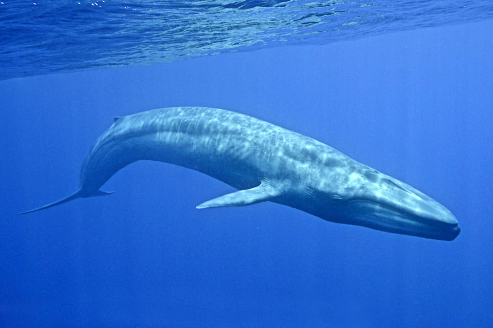
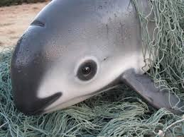
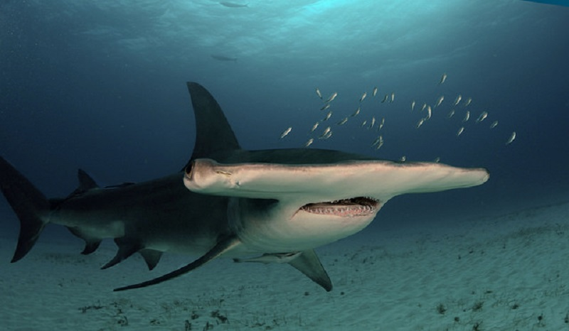

Espécies marinhas em extinção
O oceano abriga espécies incríveis, mas muitas delas estão sob sério risco de desaparecer. A pesca
predatória, a poluição e as mudanças climáticas são algumas das principais ameaças. Conheça alguns
dos animais marinhos mais ameaçados e por que sua preservação é tão importante:
❗🐢 Tartaruga-de-pente
Reconhecida pelo casco colorido e bonito, a tartaruga-de-pente já foi muito caçada para a
fabricação de objetos decorativos. Além disso, sofre com a destruição de recifes de coral, que
são sua principal fonte de alimento. O plástico nos oceanos também é um grande inimigo, já que
muitos indivíduos morrem ao ingerir sacolas e resíduos, confundindo-os com águas-vivas. Essa
espécie tem papel vital nos recifes, ajudando a manter o equilíbrio das populações de esponjas.

❗🐋 Baleia-azul
Considerada o maior animal que já existiu na Terra, a baleia-azul pode atingir mais de 30 metros
de comprimento. No século passado, foi quase dizimada pela caça comercial. Hoje, mesmo protegida
por leis internacionais, enfrenta novas ameaças: colisões com grandes embarcações, poluição
química e sonora e mudanças na disponibilidade de krill, seu alimento principal, devido ao
aquecimento global. Sua preservação é essencial para a saúde dos ecossistemas marinhos.

❗🐬 Vaquita
A vaquita é um pequeno golfinho que vive apenas no norte do Golfo da Califórnia, no México. É
considerada o mamífero marinho mais raro do mundo, com menos de 20 indivíduos vivos atualmente.
Seu maior inimigo são as redes de pesca ilegais usadas para capturar o peixe totoaba, cuja
bexiga natatória é muito valorizada no mercado negro. A vaquita acaba ficando presa nessas redes
e morre afogada. Sua situação crítica simboliza o impacto direto da atividade humana nos
oceanos.

❗🦈 Tubarão-martelo
Esse tubarão é facilmente reconhecido por sua cabeça em formato de “T”, que amplia sua visão.
Apesar de ser um predador fundamental para o equilíbrio marinho, suas populações estão em forte
declínio. A principal causa é a pesca predatória, principalmente pelo comércio das barbatanas,
usadas em sopas e pratos tradicionais em alguns países. Além disso, muitos são capturados
acidentalmente em redes de pesca. A redução dessa espécie afeta diretamente a cadeia alimentar
marinha.
